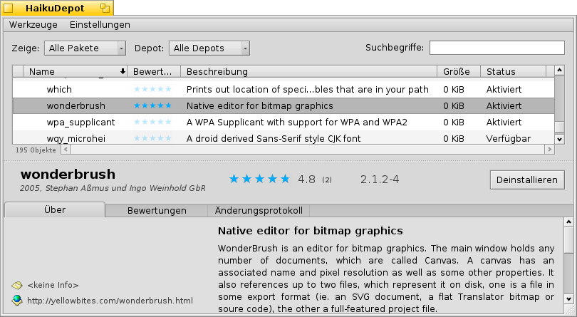
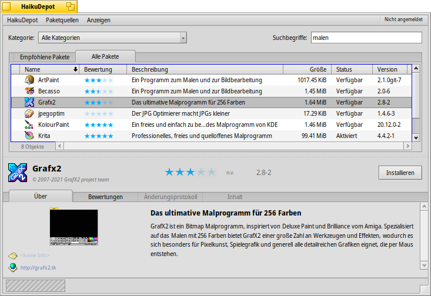
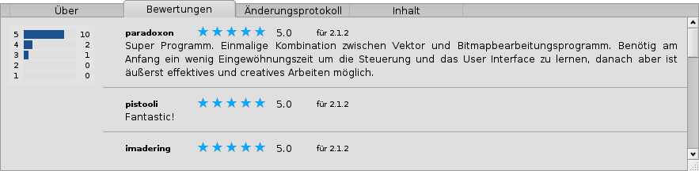
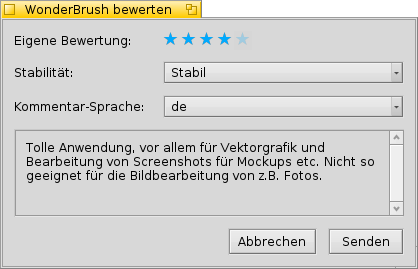

| Index |
| Filter Paketliste Infobereich Werkzeuge und Anzeigen Benutzerkonto einrichten Bewerten und kommentieren Diagnose-Logs |
 HaikuDepot
HaikuDepot
| Deskbar: | ||
| Ort: | /boot/system/apps/HaikuDepot | |
| Einstellungen: | ~/config/settings/HaikuDepot/ ~/config/cache/HaikuDepot - Cache für Icons, Screenshots, Beschreibungen etc. |
HaikuDepot is the central application when it comes to managing your software packages. With it you can browse and search through package repositories and install and uninstall packages. By default, HaikuDepot starts up with a list of "Featured packages", software that's deemed interesting to many users.
Der zweite Reiter zeigt . Die Darstellung ändert sich zu kleineren Icons, weitere Informationen werden in Spalten angezeigt.
 Filter
Filter
Ganz oben hat man einige Möglichkeiten, die Paketliste darunter zu filtern:
Mit dem Menü lässt sich die Liste auf bestimmte Kategorien wie "Audio" oder "Spiele" begrenzen.
Die im Textfeld eingegebenen Zeichen filtern die Liste auf die Pakete, die alle (per Leerzeichen getrennten) Wörter in Namen oder Beschreibung haben.
Im Menü bestimmt man welche Online-Quellen abgefragt werden sollen. "Lokal" sind Pakete, die aus anderen Quellen gekommen sind. Beispielsweise von einem USB Stick, oder von irgendeiner Webseite, oder auch Pakete die man selbst erstellt hat.
Paketliste
Wie in jedem Tracker-Fenster, lässt sich aus einem Kontextmenü per Rechtsklick auf einen Spaltentitel auswählen, welche Spalten anzezeigt werden sollen. Ein Linksklick sortiert die Liste nach der entsprechenden Spalte, und natürlich kann man die Anordnung ändern, indem man eine Spalte an eine andere Position zieht.
In der entsprechenden Spalte eines Pakets können unterschiedliche Status angezeigt werden:
: Das Paket ist momentan installiert und benutzbar.
:Das Paket existiert in dieser Paketquelle und es kann heruntergeladen und installiert werden. Bestehen Abhängigkeiten zu anderen Paketen, so wird dies bei der Installation mitgeteilt und man hat die Wahl alles Nötige ebenfalls herunterzuladen und installieren zu lassen.
: Ausstehend wird bei Paketen angezeigt, die darauf warten heruntergeladen/installiert zu werden. Der Fortschritt beim Herunterladen wird dann als Prozentangabe dargestellt.
Mittels der gepunkteten Linie zwischen Paketliste und Infobereich, lässt sich die Höhe der Liste verändern.
Infobereich
At the bottom is an area that displays information on the package that is currently selected in the list above it.
To the right of package name, author, rating and version is a button, that – depending on the current state of the package – lets you or it. If a package is already installed, you'll find an additional button there to the application.
Darunter befinden sich vier Reiter: Über, Bewertunge, Änderungsprotokoll und Inhalt.
Hier findet man eine ausführlichere Beschreibung des Pakets, sowie falls vorhanden, Bildschirmfotos, Kontaktadresse und URL des Teams, das die Software betreut. Klickt man auf ein Bildschirmfoto, öffnet es sich in voller Größe in einem neuen Fenster.
Der zweite Reiter zeigt, falls vorhanden, Bewertungen und Kommentare von Benutzern.
Links befindet sich eine Statistik, die zeigt wieviele Sterne (zwischen 1 und 5) das Paket von wievielen Benutzern erhalten hat.
In der Mitte folgen die Kommentare der Benutzer mit ihren Namen, die Anzahl der vergebenen Sterne und die Paketversion, die bewertet oder kommentiert wurde. Wie man selbst eine Bewertung abgeben kann, steht weiter unten.Hier lässt sich die Historie der veröffentlichten Versionen des Pakets nachlesen, falls dessen Entwickler diese Infos zur Verfügung stellt.
Der letzte Reiter zeigt alle Dateien und Ordner in einem Paket. Das funktioniert allerdings nur mit bereits heruntergeladenen Paketen.
Werkzeuge und Anzeigen
Im Menü ganz oben im HaikuDepot-Fenster findet sich der Menüpunkt , um eine aktuelle Liste aller verfügbaren Pakete anzufordern.
öffnet die Paketquellen Einstellungen, um sie hinzuzufügen, zu entfernen oder sie zu aktivieren und zu deaktivieren.
öffnet den SoftwareUpdater um aktualisierte Pakete zu suchen und zu installieren.
Im Menü gibt es die Möglichkeit und anzuzeigen. Für den normalen Benutzer sind sie nicht so interessant und blähen die Paketliste nur unnötig auf. Sie sind allerdings wichtig für Leute, die deren Bibliotheken, Header-Dateien etc. brauchen, um darauf aufbauende Programme zu entwickeln und zu kompilieren.
Interessanter sind da die beiden anderen Menüpunkte, um nur und anzuzeigen.
Benutzerkonto einrichten
Um ein Paket bewerten zu können, benötigt man ein Benutzerkonto beim Haiku Depot Server, der die ganzen Pakete bereitstellt und alle Bewertungen und Kommentare der Benutzer verwaltet. Ein Konto lässt sich innerhalb der HaikuDepot Anwendung anlegen, indem man auf das Menü ganz rechts in der Menüleiste klickt, das den aktuellen Status anzeigt: . Wählt man , öffnet sich ein Fenster mit zwei Reitern; einen zur Eingabe von Benutzername und Kennwort (soblad man die hat) um sich anzumelden, und der andere um ein neues Benutzerkonto einzurichten:

Für ein neues Benutzerkonto muss man:
- einen Benutzernamen wählen, der nur aus Kleinbuchstaben ohne Sonderzeichen besteht.
- ein Kennwort wählen, das aus mindestens 8 Zeichen mit 2 Großbuchstaben und 2 Zahlen besteht.
- eine funktionierende Email-Addresse angeben (falls man ein neues Kennwort zugeschickt bekommen möchte, wenn man es mal vergisst).
- das Captcha-Rätsel lösen.
- abhaken dass man zumindest 16 Jahre alt ist und die darunter verlinkten Nutzungsbedingungen akzeptiert.
Nach der Anmeldung zeigt das Menü oben rechts im HaikuDepot Fenster den Status: , mit dem eigenen Benutzernamen. Aus dem Menü lässt sich nun oder wählen.
Bewerten und kommentieren
Sobald man ein Benutzerkonto angelegt und sich angemeldet hat, kann man Pakete bewerten und, wenn man will, auch kommentieren. Lässt man den Mauszeiger über den Bewertungssternen des Infobereichs schweben, verwandeln sie sich in einen Button zum . Ein Klick darauf öffnet das Bewertungsfenster:
Hier bringt man mit dem Mauszeiger die Sterne zum aufleuchten und wählt so eine entsprechende Bewertung. Es lassen sich unterschiedliche Stabilitätsstufen vergeben und die Sprache für den optionalen Kommentar auswählen. Um einen sinnvollen Kommentar abgeben zu können, sollte man die Anwendung schon eine Weile benutzt haben, um ihre Features, Bugs und Eigenheiten kennegelernt zu haben. Außerdem sollte man keine großen Romane schreiben... lieber kurz und bündig und dabei immer höflich bleiben. :)
Klickt man auf werden die Daten zum Server geschickt. Bevor man seine Änderungen sehen kann, muss man ggf. aus dem Menü anwählen.
At any time, you can come back and edit your comment and re-rate it. You can also hide your rating from other users by deactivating a checkbox , that appears in this window once you've rated a package.
Diagnose-Logs
HaikuDepot arbeitet während der Nutzung mit lokalen und Netzwerkdiensten zusammen. Dabei können Probleme auftreten, die beim Programmieren der Anwendung nicht vorhergesehen werden konnten. In diesen Fällen können Fehlermeldungen ziemlich unspezisch ausfallen. Um solch einem Problem zuleibe zu rücken, kann HaikuDepot ein Log mit allem was es so tut ausgeben.
Manche Fehlermeldungen schlagen vor für weitere Informationen ins Log zu sehen oder man wird danach gefragt wenn man ein Ticket im Haiku Bugtracker aufgibt.
Um das Diagnose-Log sehen zu können, muss Haiku vom Terminal aus gestartet werden:
HaikuDepot -v debug
Der Befehl verwendet den Parameter -v um zu steuern wie ausführlich protokolliert werden soll. Mögliche Werte sind dabei: off, info, debug und trace. Mit off wird nur sehr wenig geloggt, während das mit trace sehr detailliert passiert.
Sobald HaikuDepot startet und während man die Anwendung benutzt, sieht man im Terminal Text runterscrollen; das ist das Diagnose-Log.